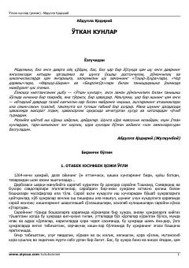

OKO'zbek adabiyotining birinchi klassik romani — Otabek va uning taqdiri.
"O'tkan kunlar" — Abdulla Qodiriyning mashhur tarixiy romani bo'lib, xon zamonlarida Toshkent va uning atrofida yashagan Otabek va boshqa qahramonlarning hayotini tasvirlaydi. Roman o'zbek adabiyotida yangi roman janrining asoschilaridan biri sifatida tan olingan. 2004-yilda "Sharq" nashriyoti tomonidan "Asr oshgan asarlar" turkumi doirasida qayta nashr etilgan.